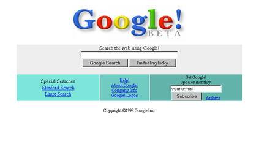

Google and its history

Google Inc. is an American multinational technology company that specializes in Internet-related services and products. These include online advertising technologies, search, cloud computing, software, and hardware. Google was founded in 1998 by Larry Page and Sergey Brin while they were Ph.D. students at Stanford University, in California.
History

Google began in January 1996 as a research project by Larry Page and Sergey Brin when they were both PhD students at Stanford University in Stanford, California.
While conventional search engines ranked results by counting how many times the search terms appeared on the page, the two theorized about a better system that analyzed the relationships among websites. They called this new technology PageRank. it determined a website's relevance by the number of pages, and the importance of those pages that linked back to the original site.
Page and Brin originally nicknamed their new search engine "BackRub", because the system checked backlinks to estimate the importance of a site. Eventually, they changed the name to Google; the name of the search engine originated from a misspelling of the word "googol", the number 1 followed by 100 zeros.